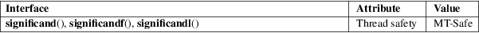

significand, significandf, significandl − get mantissa of floating-point number
Math library (libm, −lm)
#include <math.h>
double
significand(double x);
float significandf(float x);
long double significandl(long double
x);
Feature Test Macro Requirements for glibc (see feature_test_macros(7)):
significand(),
significandf(), significandl():
/* Since glibc 2.19: */ _DEFAULT_SOURCE
|| /* glibc <= 2.19: */ _BSD_SOURCE || _SVID_SOURCE
These functions return the mantissa of x scaled to the range [1,2). They are equivalent to
scalb(x, (double) −ilogb(x))
This function exists mainly for use in certain standardized tests for IEEE 754 conformance.
For an explanation of the terms used in this section, see attributes(7).

None.
significand()
BSD.
significand()
BSD.
ilogb(3), scalb(3)